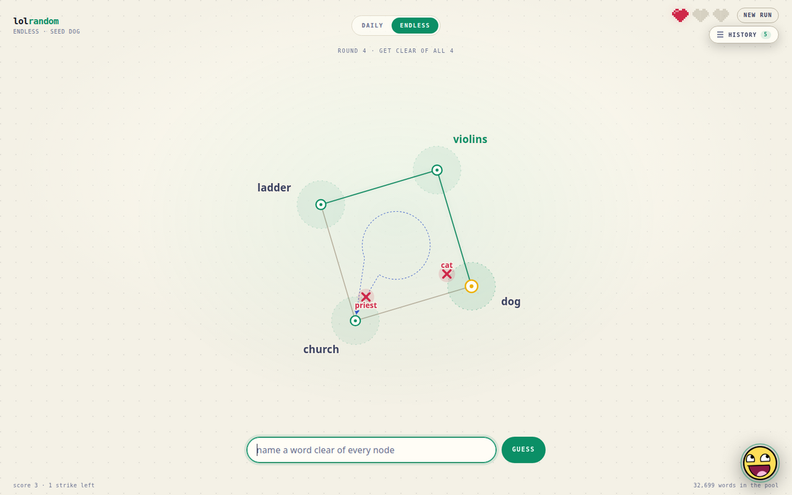

lolrandom

You are shown a chain of words. Name a word the chain doesn’t predict — and you have to be clear of every word in it, including the ones you added yourself. Each round you win appends your word to the chain and makes the next round harder. Three strikes and the run is over; your score is how long the chain got.
There is no hidden target word to guess at. That is the whole design: a guess is judged only by how strongly it is predicted, so a strange but honest answer is a good move.
How the scoring works
Every word is a 300-dimensional GloVe vector. A guess’s score is its largest |cos| against any single member of the chain, so it can’t hide behind a good average — one related word is enough to sink it. The 32,699-word Pool is nouns only, filtered through a committed lexicon.
The win cut is an absolute |cos| < 0.075, not a rank cut. I measured both: a rank cut holds a fixed share of the Pool and therefore stays difficulty-invariant as the chain grows (a plausible guess won 14.2% of the time at chain length 1 and 10.1% at length 5), while an absolute cut is the only version that actually ramps. Bands above the cut tell you roughly how close you were.
The board
The chain is drawn as a node graph rather than a list: a seed is one node, two words are a line, three are a triangle, and so on. A wrong guess lands inside that polygon, placed by how tied it is to every member, so its position tells you which word it was nearest without saying so in words.
The newest miss also draws its bridge: a dashed loop from your word through the intermediate words that lose, ending on the member that caught it.
sandwich nearest dog
BRIDGE sandwich → chicken → pig → dogThe bridge is a deterministic walk on a graph of each frequent word’s 20 nearest neighbours, so it costs nothing and it isn’t something the hint button should sell. The hint buys the direction, not the path.
Hints
The little face in the corner gives one hint per round, free, and only after you’ve missed — so it is a way out of a dead end rather than a way to skip the thinking. A hint points at one curated kind of word whose targets I verified were winners, and an LLM writes the one sentence, in the game’s own rawr-xD register. If the model fails or no key is set, a template built from the chain’s hardest predictions takes over: correct, just blunter.
The numbers stay off the screen on purpose. They live behind a debug flag instead, because a game that shows you the |cos| is a game you solve with arithmetic.
Daily and endless
Daily is one run per UTC day, seeded from a curated list of common, concrete nouns — the words whose predictions are broadest. Everyone starts from the same word and the chains diverge from the first answer. Endless lets you start from any word in the Pool, which is how I actually played it a hundred times while tuning the cut.
The build
Standard library Python plus numpy for the engine, vanilla JavaScript for the page with no build step. The 35 MB of vectors are loaded at boot; the whole thing is 85 MB of RSS and answers in well under a second. State is in memory, so a reload resumes a run instead of resetting it.
The design decisions — what the win cut is, why a run is a chain, why the bridge is guess feedback — are written down as ADRs, along with the directions I tried and rejected so they don’t get re-derived.
The game is deployed on a small always-on instance, so it should be awake when you click. If it isn’t, that is a five-dollar server having a bad day, not the game.